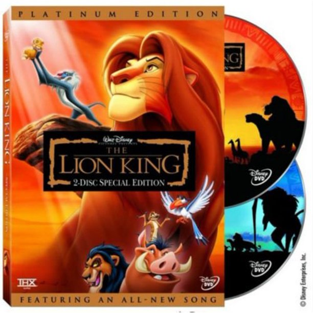

This game's clips were originally found off of the second DVD in The Lion King DVD set (the blue disc pictured).
The game is a very simple choose-your-own-adventure where Timon the meerkat and Pumbaa the warthog are stopped along their safari journey by crossroads where the user must choose their next direction to travel, either left or right.
Each choice will have different outcomes, such as going into a cave full of bats (oof) or traveling through an elephant graveyard (ouchie).
The remote for the DVD player was how the user interacted and influenced what would happen to Timon and Pumbaa in the original experience. With this website, I hope to recreate a faithful online representation of what I cherished as a child.